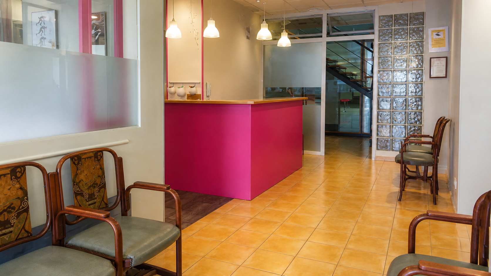

La escuela
Un lugar para
crecer bailando.
Formación, cuidado y un espacio de encuentro en pleno centro de Gandia.

Nuestro espacio
Todo dispuesto para moverse.
Las instalaciones cuentan con suelo especial de linóleo para Ballet, salas dotadas con espejos y barras, tres salas de ensayo y dos estudios para entrenar, crear y disfrutar de la danza.
En Ballet, el trabajo técnico se apoya en los principios del método Vaganova: una formación progresiva que une colocación, musicalidad, fuerza y expresividad.
En el corazón de Gandia, la escuela es un lugar cercano para las familias y un punto de encuentro para quienes quieren vivir la danza día a día.
Cómo llegar
En el corazón de Gandia.
Carrer Pare Carles Ferrís, 52, 46702 Gandia, Valencia. Te esperamos cerca del centro, en un espacio pensado para que cada clase comience con calma.
Cómo llegar en Google Maps ↗